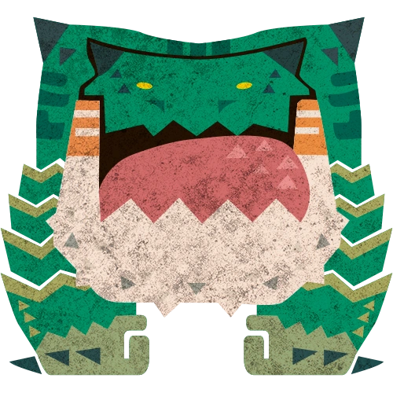
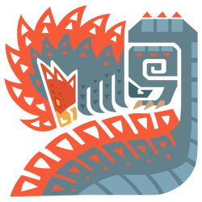
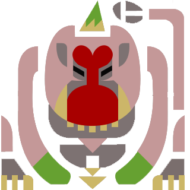
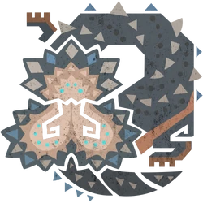
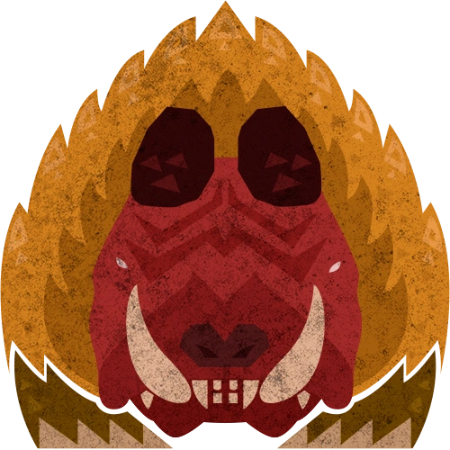
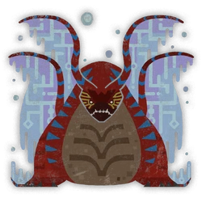
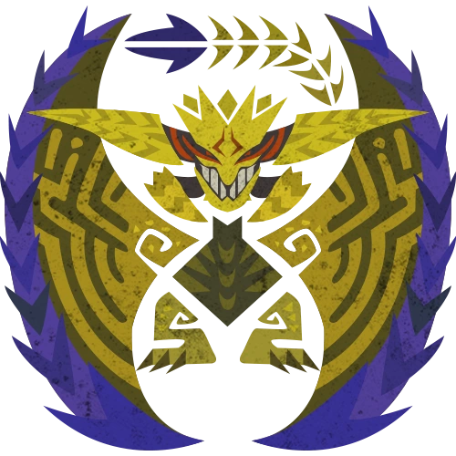

Monsters
Monsters are the main challenge you willbe faced with in Monster Hunter Wilds. Each monster has unique behaviors, attack patterns, and weaknesses. Learning what makes each monster unique is key to success. Here are some of the monsters you will encounter early on in the game, along with tips on how to fight them.

Chatacabra
The Chatacabra is an amphibious monster capable of coating its arms in stones and dirt for protection. It utilizes its long tongue to execute sweeping attacks capable of knocking off-guard hunters to the ground.
Weakness: Thunder, Ice
Tip: Repeatedly hit the stones and dirt on its arms to knock them loose and stagger the monster. The tongue of the Chatacabra is a prevlent weak point, so aim for it when possible.

Quematrice
The Quematrice is a Brute Wyvern type monster that uses its large tail to spread flammable oil which ignites its enemies and surroundings. Many of this monsters attacks inflict Fireblight, so be sure to watch your health guage after getting hit.
Weakness: Water
Ailments: Fireblight
Tip: If struck and ailed by Fireblight, repeatedly dodge roll to extinguish the blight.
Lala Barina
The Lala Barina is a large Temnoceran type monster that resides in the Scarlet Forest. It utilizes its stinger as well as can fire the host of florets seen on its rose-shaped abdomen as a means to paralyze its enemies.
Weakness: Fire
Tip: The Lala Barina's weak point is it backside, especially when its stinger and petals are exposed, but be careful, as getting hit by multiple florets causes Paralysis, which has no cure but can be mitigated through the use of the Paralysis Resistance Armor Skill.

Congalala
The Congalala is a Fangest Beast type monster resembling a gorilla with pink fur and a hippo-like head. It utilizes its potent breath to inflict various ailents depending on the type of mushrooms it eats.
Weakness: Fire
Tip: The stench inflicted on hunters by the Congalala is so potent that healing items have no effect. Use a Deoderant or evade in water to dispel it.

Balahara
The Balahara is a large Leviathan type monster that bears tripartite jaws coered in sawblade-like teeth. It is covered in small, brownish grey scales and has 4 short legs alongside a drill-like tail.
Weakness: Thunder
Tip: Watch out for the mud the Balahara spits, as it inflicts Waterblight , which reduces your stamina regeneration.

Doshaguma
The Doshaguma is a formidable, territorial, and aggressive fanged beast. It is covered in golden-brown fur and is often seen in the wilds traveling in packs.
Weakness: Thunder, Fire
Tip: Its best to avoid fighting an entire pack of Doshaguma at once. Utilize dung pods to seperate your target from the pack.

Uth Duna
The Uth Duna is the Apex of the Scarlet Forest. It is a large Leviathan type monster with a body covered in colorful red scales often covered by massive translucent and watery fins that act as armor.
Weakness: Thunder
Tip: Prioritize breaking the fins of the Uth Duna to remove its armor and make it more vulnerable to damage. Uth Duna is also capable of inflicting Waterblight, so be sure to watch your stamina and use a Nullberry to dispel the blight when afflicted.

Rey Dau
The Rey Dau is the Apex of the Windward Plains. It is a large Flying Wyvern type monster covered in bony golden scales as well as smaller black scales on its underside. It features large horns on its head that it folds inwards when channeling electricity to use akin to a railgun. Its wings are also formidable and used as a means of attack.
Weakness: Ice, Water
Tip: Utilize Flash Pods to interrupt Rey Dau's attacks and create openings for you to strike. Rey Dau is also capable of inflicting Thunderblight which causes you to be more susceptible to being stunned by attacks, so be sure to watch your health and use a Nullberry to dispel the blight when afflicted.
Moving On
These are just a few of the monsters you will encounter in the early stages of the game. As you progress, you will encounter more powerful and challenging monsters that will test your skills as a hunter. Be sure to study each new monster's behaviors and prepare accordingly. Finally, Check out some Hunter Tips to improve your skills.